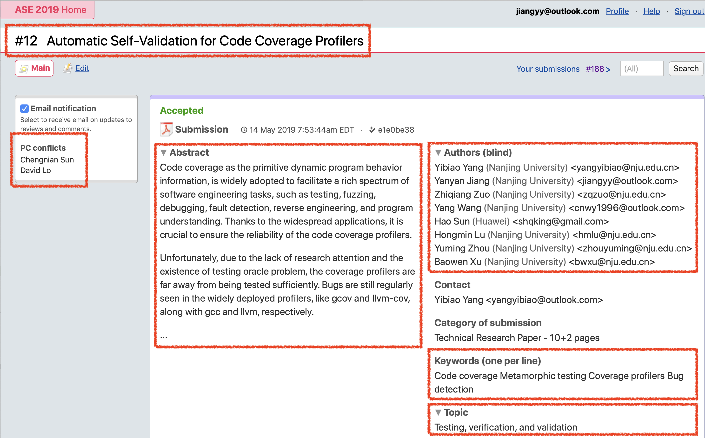

public: True class: center, middle # 什么是论文 蒋炎岩 <jyy@nju.edu.cn> <div class="row justify-content-md-center"> <div class="center author-block"> <p><a href="http://www.nju.edu.cn/">南京大学</a></p> <img class="inline-img" height="64px" src="../static/img/nju.png"/> </div> <div class="center author-block"> <p><a href="http://cs.nju.edu.cn/">计算机科学与技术系</a></p> <img class="inline-img" height="64px" src="../static/img/njucs.jpg"/> </div> <div class="center author-block"> <p><a href="http://moon.nju.edu.cn/">计算机软件研究所</a></p> <img class="inline-img" height="60px" src="../static/img/ics-nju.png"/> </div> </div> --- # 本讲概述 > 写论文一直都是新手难以越过的一关，需要长期的训练。 ---- 本讲概述 * 论文到底写什么？ * 会议论文投稿流程 * 其他相关话题 --- class: center, middle # 论文到底写什么？ --- # 论文 > *Teach the research community something.* ---- 1. 把客观事实解释清楚 (流程、算法、实现……) * 大部分同学在这个阶段 * 少部分同学尚未达到此阶段 2. “.red[说服别人]” * argue (通过合理的论证和证据让人信服) * defense (在容易产生误解的地方进行解释) * 忽悠 (避重就轻/混淆视听) 这是学术不端！ --- # [How to write a technical paper](https://homes.cs.washington.edu/~mernst/advice/write-technical-paper.html) (by Michael Ernst) The purpose of research is to *increase the store of human knowledge* * effectively communicate it to the rest of the world * clarify your thinking and thereby improve your research ---- You may be surprised how difficult it is to clearly communicate your ideas and contributions; doing so will force you to understand them more deeply and enable you to improve them. --- # Know Your Message, and Stay on Message The goal of writing a paper is to change people's behavior * determine your goal (also known as your thesis), and focus the paper around that goal. ---- As a general rule, your paper needs to *.red[convince]* the audience of three key points: * the problem is interesting * it is hard * you solved it If any of these is missing or unclear, the paper will not be compelling. You'll also need to .red[*convince your readers that your contributions are novel*]. --- # Understand Your Audience “站在读者的立场上” * who will read your paper? * what are their backgrounds, motivations, interests, and beliefs? * what are the key points you want a reader person to take away from your paper? For each point in your paper, you need to explain both what and why. Start with what, but .red[*don't omit why*] (arguments) * not enough to state how an algorithm works; you should explain why it works in that way, or why another way of solving the problem would be different * not sufficient to present a figure and merely help the reader understand what the figure says. Ensure that reader understands the .red[*significance or implications*] of the figure --- # Which Details to Include Your purpose is to .red[*communicate specific ideas*], and everything about your paper should contribute to this goal. * Common mistake: *focus on what you spent the most time on*. (most work that you do will never show up in any paper) * the purpose of the paper is not to describe what you have done, but to inform readers of the .red[*successful outcome or significant results, and to convince readers of the validity of those conclusions*]. The audience is interested in .red[*what worked, and why*], so start with that. If you discuss approaches that were not successful, do so briefly, and typically only after you have discussed the successful approach. Furthermore, the discussion should focus on differences from the successful technique, and if at all possible should provide general rules or lessons learned that will yield insight and help others to avoid such blind alleys in the future. --- # Directly to the Topic Whenever you introduce a strawman or an inferior approach, say so upfront. A reader will (and should) assume that whatever you write in a paper is something you believe or advocate, unless very clearly marked otherwise. A paper should never first detail a technique, then (without forewarning) indicate that the technique is flawed and proceed to discuss another technique. Such surprises confuse and .red[*irritate*] readers. This mistake is often called “leading the reader down the garden path”. When there are multiple possible approaches to a problem, it is preferable to give the best or successful one first. --- # Make the Organization and Results Clear A paper should communicate the main ideas of your research (such as the techniques and results) *.red[early]* and .red[*clearly*]. * bad approach: start with a mass of details and only at the end tell the reader what the main point was or how the details related to one another * the reader is more likely to appreciate which evidence is important and why, and is less likely to become confused or frustrated. ---- It is a very common error to dive into the technical approach or the implementation details without first appropriately framing the problem and providing motivation and background --- # Brevity *Make every word count* * cut out verbiage and fluff * use shorter and more direct phrases wherever possible ---- 新手内心独白：写不出来带 message 的东西，只能凑字数了 *Make your writing crisp and to the point* (逻辑) * eliminate any text that does not support your point * each section contributes to the paper's main point * each paragraph should have a single point * each sentence make a single, clear point that strengthens the paragraph --- # Writing Style (请参考 Michael Ernst 的 guidelines) * avoid passive voice, avoid inappropriate first person, prefer singular to plural number, use correct tense, ... ---- 一些更大的问题 (逻辑) * puffery, self-congratulation, and value judgments: give the *facts* and let the reader judge * do not use words like “clearly”, “easily”, “obviously”, and “trivially” ---- > If you do not (or cannot) write well, why should readers believe you were any more careful in the research itself? The writing reflects on you, so make it reflect well. --- # Paper Writing Workflow 我们试着有一个 paper writing workflow (但很少执行) * 在得到初步的 evaluation results 后开始正式的写作过程 * 作出 section/subsection structure 的规划 * 写出 introduction 中每一个段落的 topic sentence * topic sentence 连接成为摘要 * topic sentence 展开成为段落 * 段落展开为章节 --- # 英文与中文 中文被发明以来，最重要的功能是记事 & 讲故事 > 晋太元中，武陵人捕鱼为业。缘溪行，忘路之远近。忽逢桃花林，夹岸数百步，中无杂树，芳草鲜美，落英缤纷。渔人甚异之。复前行，欲穷其林... ---- 相比于中文，英文能更灵活地调整主谓宾/从句的顺序，构成树状的逻辑结构 --- # 例子 > David Saff, Shay Artzi, Jeff H. Perkins, and Michael D. Ernst. [Automatic test factoring for Java](https://homes.cs.washington.edu/~mernst/pubs/test-factoring-ase2005-abstract.html). ASE'05. --- # Focused Tests are Appealing A focused test exercises only part of a system; for example, a unit test exercises one component (such as a single class) without relying on any other component. A test suite containing small, fast, focused tests has many benefits. Focused tests execute quickly, so they can provide fast feedback, and they can be run frequently. Focused tests isolate errors to a small amount of code, easing debugging by concentrating a developer’s attention on a smaller set of places. Focused tests are easy to prioritize and select from during regression testing because only a small fraction of them will exercise each individual changed component. --- # Focused Tests are Not Available, But System Tests Are! Often, focused tests are not available. Instead, a software system may have system tests: long-running, end-to-end tests that exercise much of the functionality of the entire system. System tests have their own advantages. System tests tend to be easier than unit tests for people to create and understand. Because there are fewer of them, they can be easier to manage. They are less brittle in the face of changes, such as modification of an internal interface. They tend to be more comprehensive, both because they cover more code and because they create more complex data structures that may expose additional errors. --- # We Can Get Focused Tests from System Tests using Test Factoring! Our research aims to provide the benefits of focused tests to a developer who has only written system tests. In particular, we propose a technique, *test factoring* [13], for automatically creating fast, focused unit tests from slow system-wide tests; each new unit test exercises only a subset of the functionality exercised by the system tests. The focused tests can augment (but are not intended to replace) the system tests. When a system test is modified, or the system itself is changed in a way that is incompatible with the factored tests, the focused tests can be automatically re-generated. --- # Test Factoring: Background Test factoring takes three inputs: (1) a program, (2) a system test, and (3) a partition of the program into the “code under test” (for which factored tests are desired) and the (untested) “environment”. The output of test factoring is a set of factored tests for the code under test. Running the factored tests does not execute the “environment” part of the original program, only the “code under test” part. The test factoring procedure can be repeated, varying the program, the system test, or the partition. --- # But Test Factoring Requires Mocking Objects Our approach to test factoring replaces the environment part of the program by mock objects. Mock objects, like stubs, simulate an expensive resource, but mock objects also assert that they are used in a specific way [3]. If the simulation is faithful to the expensive resource, then a test that utilizes the mock object rather than the expensive resource can be cheaper (for example, faster). Some examples of expensive resources that might be replaced by mock objects are: large or slow computational resources such as databases; data structures and disks (setting them up in exactly the required state may be difficult, or side effects may be unacceptable); network communication (whose costs include delay, the need for extra hardware such as remote computers and network infrastructure, and the difficulty of isolating irrelevant effects); hardware resources; and human attention. --- # Solution: Automatically Mock Objects by Capture-Replay! Developers have long constructed stubs and mock objects by hand. Our contribution is the automatic creation of mock objects via a dynamic, capture–replay technique. The capture stage executes the system test, recording all interactions between the code under test and the environment in a “transcript”. During replay, the code under test is executed as usual. However, at each point that it would have interacted with the environment, no computation is performed; instead, the value that was observed during the capture stage (and was recorded in the transcript) is used. --- # This Should be Useful! (And This Paper Should Be Accepted) Test factoring complements other techniques for reducing the cost of testing. Test selection [6, 5, 10] runs only those tests that are possibly affected by the most recent change, and test prioritization [18, 11, 16] runs first the tests that are most likely to reveal a recently-introduced error. For test suites with long-running or expensive tests, selection and prioritization can be insufficient, because running even the ideal subset of the tests in the ideal order may be costly enough to prohibit running the tests with the ideal frequency. We propose augmenting them with test factoring, which from each large test generates multiple unit tests that can be run individually and are amenable to test selection and prioritization. --- # 阅读时：留心 不仅把作者想表达的技术内容学到，也识别出那些表达好的论文 (不是所有技术好的论文表达都非常好)，学习它们的表达 --- class: center, middle # 会议论文投稿流程 --- # 投稿 一般在投稿系统上完成投稿 (easychair, hotcrp) ---- 提交内容 * 论文 (pdf 格式) * 作者信息 (避免纠纷，deadline 后不得修改) * 论文基本信息：标题 & 关键字 & 摘要 (reviewer bid 时使用) * 勾选论文所属的 topic * PC Conflict (避开潜在有关系的审稿人) ---- 留意 deadline (例子：AoE = Anywhere on Earth) * 相当于北京时间第二天晚 8 点 --- # Hotcrp：例子 .center[ ] --- # Reviewing 流程 Program Committee 成员会对论文进行 bid (自己关注哪篇论文) * 系统会自动完成分配 ---- 审稿流程 * reviewer 很烦的：要审很多 paper，也是赶 deadline! * .red[不喜欢的 paper 就各种找理由 reject 了] * 所以 novelty 一定要足够 --- # Rebuttal 给你一个解释的机会，如果有 reviewer 瞎了看错了巨大的部分的话 * 只能指出 reviewer 的 factual errors * 一般不能补充任何数据 (reviewer 有权不理睬) ---- 如果 rebuttal 的时候感觉已经凉透了，可以选择给 PC Chair 写信撤稿，从而转投其他 * parallel submission 是严格禁止的学术不端行为 ---- Fun facts: * hotcrp 提交系统上你每次提交 rebuttal，reviewer 都会收到邮件！所以.red[一定要一次提交]！ * 焦急地等待结果 (notification 通常北京时间 +1，半夜收到结果) --- # .red[Reject] & Sad > We regret to inform you that your submission: > > "XXXXX" > > The competition was really strong. We received XXX submissions and selected > YYY for inclusion in the program (ZZ% acceptance rate). > > The reviews of your submission are enclosed, as well as a reviewers’ discussion > summary. We hope this will be a source of useful feedback and will help you > revise the paper for a future resubmission. ----- 胜败乃兵家常事，大侠请重新来过 --- # .blue[Accept] & Camera Ready > Congratulations! We are happy to inform you that your paper ... > has been accepted for inclusion in the main XXX program. > > XXX received YYY submissions, of which ZZZ were reviewed as full > papers (technical or experience) and WWW as new ideas papers... ---- 根据审稿意见作出修改 (非常必要)，然后提交最终版本 * 需要注册会议并报告论文 --- # 第三种情况：Conditional Accept 审稿人对部分内容表示不满，会有一个审稿人作为 shepherd 监督你完成论文的修改，直到满意后 accept * 如果惹怒了他，论文最终会被 reject * 一定要怂 * 一定要怂 * 一定要怂 * (当然最重要还是把内容修改到位) --- class: center, middle # 其他论文相关的话题 --- # 会议 or 期刊？ 会议 * .red[向大家宣传你的 research，让同行在想起 “XXX” 问题的时候能想到你] * “曝光自己” 的机会 * 遇到旧朋友、认识新朋友 * <strike>顺便可以游山玩水</strike> * 同时也会收取注册费 (数百 $)，经费充足的研究组才能资助开会 ---- 期刊 * 闷声发表，周期很长 * 传统的体系中认可度更高 (在计算机领域更认可顶级会议) --- # 会议 Program 会议通常有丰富的学术活动，可以各种拓展视野 * Workshops * Technical research (我们所指的发表会议论文) * New ideas * Doctoral Symposium * Student Research Competition * Tool demonstrations * Posters... --- # 奖项 对于一部分获得较多好评的论文，会颁发一些奖项 * [ACM SIGSOFT Distinguihed Paper Award](http://www.sigsoft.org/awards/distinguishedPaperAward.html) * [ACM SIGSOFT Impact Paper Award](http://www.sigsoft.org/awards/impactPaperAward.html) .center[<img src="../static/wiki/gser/2019/img/yuju-award.jpg" width="500px"/> ] ---- 其他奖项 * [SIGSOFT Outstanding Doctoral Dissertation Award](http://www.sigsoft.org/awards/dissertationAward.html) (目前获得的华人有龙凡和 Jeff Huang) --- # Academic Integrity 从大学时代的 “[抄作业](https://zhuanlan.zhihu.com/p/40568346)” 开始，学术诚信问题一直都存在 * 陈进/汉芯一号毁掉了中国芯片产业 (纯粹的造假) * 梁滢已从互联网上消失 (抄袭/一稿多投) * 韩春雨实验不可重复 (疑似数据造假) ---- 学术诚信/道德： * .red[尽一切可能保证自己研究的正确、真实、可重复] * 总是对数据持怀疑态度：发现 positive 的结果，反复看是不是自己哪里弄错了 * 准备并公开 artifacts --- # 例子：我们历经的一次撤稿 > Dear XXXX'YY Program Co-chairs, > > We are very sorry! Could we .red[*request to withdraw our submission (id: #xxx, title: “xxx”) from the reviewing process*]? > > The reason is that when reexamining the system implementation and experimental process, we .red[*found some flaws that could potentially threaten the validity of the experimental results*]. We believe that it would be inappropriate to allow the submission still under the rigorous reviewing process. So we formally raise the request with the consensus of all the co-authors of this submission... --- # PC Chair Responses: > Thank you for notifying us about this. We will withdraw the application for you and greatly appreciate your .red[*integrity*] in notifying us about the problem you have discovered. > > Good luck with fixing this for a future submission. ---- > I'm writing to second/repeat what XXX said: we highly appreciate your .red[*integrity*] and informing us about the issues early. I wish you all the best in addressing those issues for the next submission!